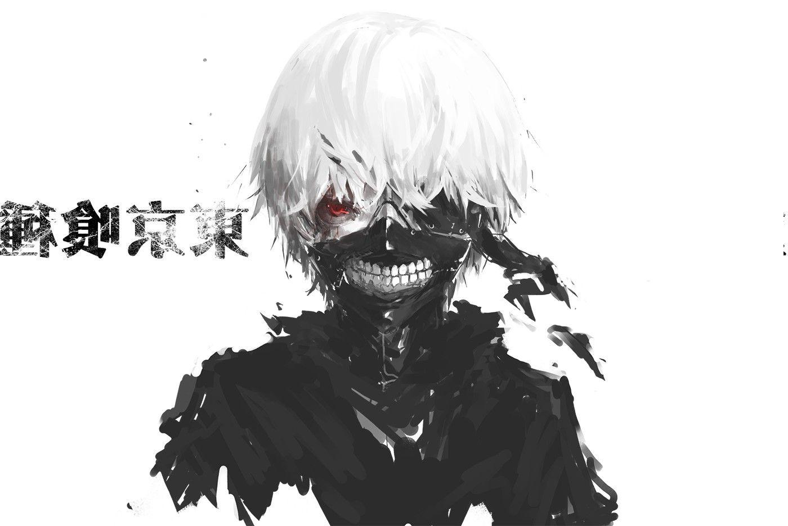
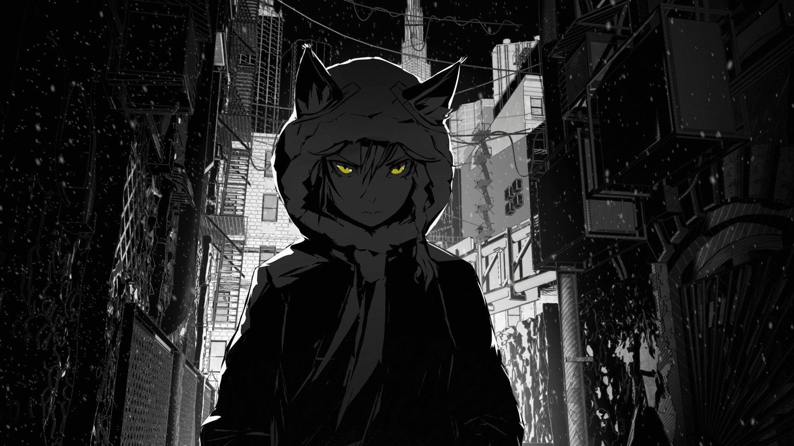
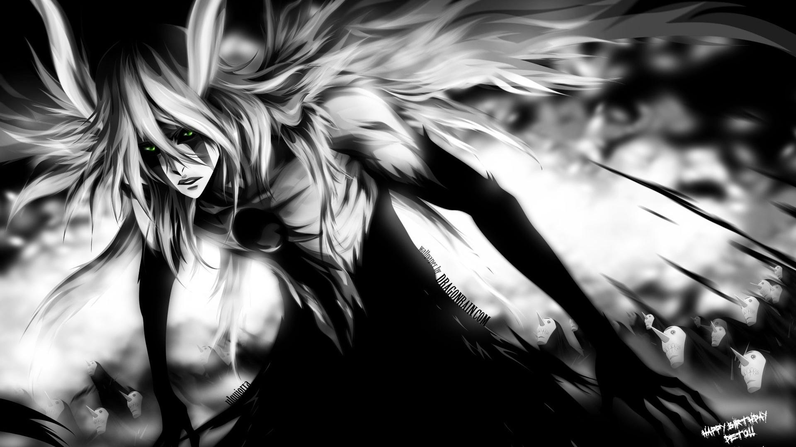
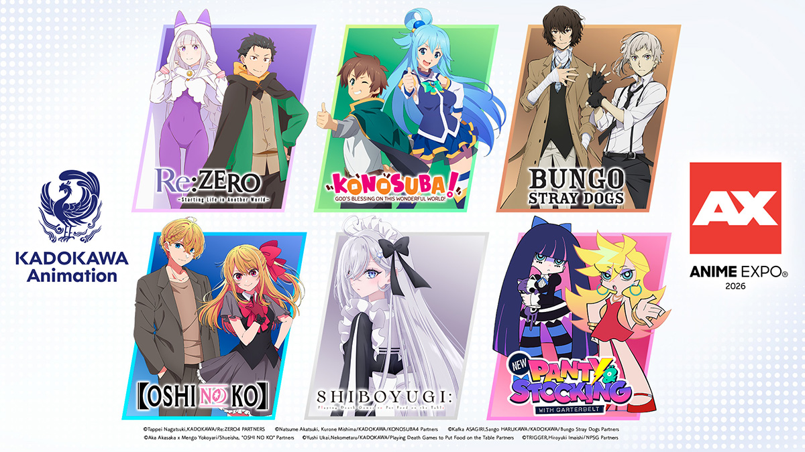
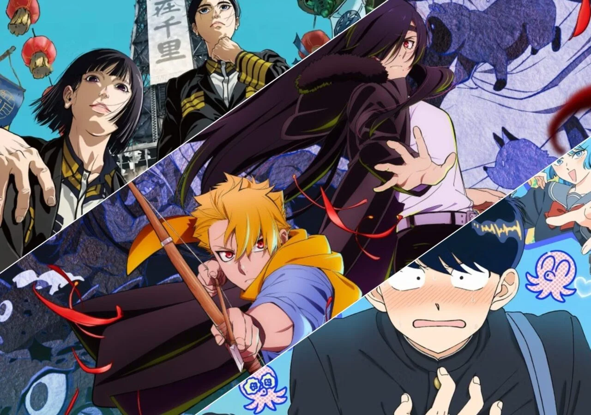

Trending Animes This Week:
- Re:Zero
- DanDanDan
- Demon Slayer
- One Piece
- Kaiju No.8
- Tomb Raider King
Explore More Animes Click Here⇗




New Episodes in Action | Comedy | Romance
The second season ended with its 12th episode in September 2025. The entire season had leaked online in July 2025, and the final episode in the leak listed a third season. Kodansha USA Publishing is releasing the manga digitally in English. Inoue and Yoshioka launched the manga in Kodansha's Good! Afternoon magazine in April 2014. Crunchyroll previously released chapters of the manga as they debuted in Japan.
Explore More Animes Click Here⇗

Genres: action, comedy, drama, horror, psychological, romance, science fiction, supernatural
The story of Dandadan follows Momo Ayase, a high school girl who believes in ghosts, and Ken "Okarun" Takakura, a boy obsessed with aliens.

Genres: action, comedy, drama, romance, science fiction, supernatural
Available in both Sub & Dub in Netflix. Enjoy watching newely releasing animes and Movies you enjoy in Netflix.
Season 3
Plot Summary:Natsuki Subaru, an ordinary high school student, is on his way home from the convenience store when he finds himself transported to another world. As he's lost and confused in a new world where he doesn't even know left from right, the only person to reach out to him was a beautiful girl with silver hair. Determined to repay her somehow for saving him from his own despair, Subaru agrees to help.
Releasing
Plot Summary:After moving out on his own to a seaside town, Iori Kitahara makes a college debut he never anticipated. A new chapter of his life unfolds, full of diving with beautiful girls and shenanigans with a gaggle of lovable bastards! Idiot-expert Kenji Inoue and au naturel authority Kimitake Yoshioka bring you a glorious college tale filled with booze-fueledantics!
Completed
Plot Summary: The hero was slain, the king was felled, and the child of fate was seized. Clevatess, a lord of dark beasts blessed with both peerless strength and superhuman intellect, raged at the thirteen heroes who felled him and vowed to wipe humanity out. Instead, he has found himself saddled with a terrible burden: a newborn human baby.
Ongoing
Plot Summary:After a daring escape from the Future Island Egghead, the Straw Hat Crew set their course for a legendary destination. Joined by the mighty Giant Warrior Pirates, they finally reach Elbaph, the long-awaited Land of Giants. New encounters with Giants, and long hoped-for reunions unfold. A colossal new chapter begins as the crew heads into an adventure unlike anything before, all in the pursuit of the ultimate treasure, the "One Piece."
New Season
Plot Summary: Nanoka survived a car accident that killed her parents when she was young. Her only memory was a mysterious burning shopping street that didn't match any official reports. Years later, rumors of ghosts, she returns to the site and is transported back to early 20th-century Japan. Where she encounters a mysterious man named Mao, claiming that Nanoka isn't human, but an ayakashi (demon).